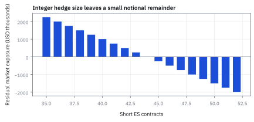
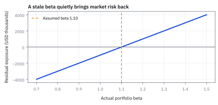

19.3 Hedging with ES Futures
พอร์ตหุ้นไม่ได้ขยับเท่าตลาดเป๊ะ จำนวนสัญญา futures ที่ใช้ปิดความเสี่ยงจึงต้องคิดจาก beta คูณมูลค่าพอร์ต แล้วยังต้องวัดความเสี่ยงที่ปิดไม่ได้ และเงินสดที่ต้องเตรียม
ผู้จัดการกองทุนคนหนึ่งดูแลพอร์ตหุ้น (กลุ่มหุ้นหลายตัวที่ถือรวมกัน) เขากลัวว่าทั้งตลาดอาจร่วงแรงในสัปดาห์หน้า แต่เขายังเชื่อในหุ้นที่เลือกไว้ จึงไม่อยากขายหุ้นสักตัว สิ่งที่เขาต้องการคือ hedge ความเสี่ยงตลาด แปลว่าถือของอีกชิ้นที่ขยับสวนทาง ให้พอร์ตรวมไม่ได้ไม่เสียเมื่อทั้งตลาดขยับ ตลอดหนึ่งสัปดาห์นี้
ของที่ใช้คือ ES ซึ่งเป็นสัญญา futures บนดัชนี S&P 500 (ดัชนีที่วัดราคารวมของหุ้นใหญ่ 500 ตัวในสหรัฐ) futures คือสัญญาที่ตกลงวันนี้ว่าจะซื้อขายดัชนีในวันข้างหน้าที่ราคาหนึ่ง ราคา ES บอกเป็น “จุด” แบบเดียวกับดัชนี และราคาที่ขยับทุกหนึ่งจุดมีค่าเป็นเงินคงที่ ถ้าเราขาย ES ไว้ เราได้เงินเมื่อราคาลง และเสียเงินเมื่อราคาขึ้น ซึ่งสวนทางกับหุ้นในพอร์ตพอดี ในหน้านี้คำว่า “ตลาด” หมายถึงดัชนี S&P 500 ตัวนี้
ของที่รู้:
- มูลค่าพอร์ต $V=\$10{,}000{,}000$ หรือ \$10 ล้าน (สมมติ)
- beta ของพอร์ต $\beta=1.10$ (สมมติ) beta บอกว่าเมื่อตลาดขยับ 1% พอร์ตนี้ขยับเฉลี่ย 1.10% ไปทางเดียวกัน ที่มาของ beta อยู่ในหน้า CAPM
- ราคา ES $F=5{,}000$ จุด (สมมติ)
- เงินต่อหนึ่งจุดของ ES $M=\$50$ ตามข้อกำหนดของสัญญา สัญญาหนึ่งฉบับจึงคุมดัชนีมูลค่า $FM=5{,}000\times50=\$250{,}000$
เพื่อนคิดว่าพอร์ตมีมูลค่า \$10 ล้าน ก็ขาย ES ให้คุมมูลค่าเท่ากัน ได้ $V/(FM)=10{,}000{,}000/250{,}000=40$ สัญญา
ถ้าขาย 40 สัญญา แล้วตลาดลง 2% ผลรวมของหุ้นกับ ES เป็นกำไรหรือขาดทุนเท่าไร และที่ถูกควรขายกี่สัญญา?
ลองตอบก่อนเปิดเฉลย
40 สัญญายังขาดทุน \$20,000 เพราะพอร์ตที่ beta 1.10 ลงแรงกว่าตลาด ส่วน ES ลงเท่าตลาด ให้ $r_M=-2\%$ คือผลตอบแทนของตลาดในวันนั้น $\Delta V$ คือเงินที่พอร์ตหุ้นขยับ $\Delta F$ คือจุดที่ ES ขยับ และ $\Pi_{40}$ คือเงินที่ ES 40 สัญญาให้ (ขายไว้จึงใส่ $-40$ แต่ละสัญญาได้ \$50 ต่อจุด)
ที่ถูกคือ 44 สัญญา เพราะพอร์ตขยับเหมือนถือดัชนีมูลค่า $\beta V=1.10\times10{,}000{,}000=\$11{,}000{,}000$ ไม่ใช่ \$10 ล้าน จึงต้องขาย $11{,}000{,}000/250{,}000=44$ สัญญา แล้ว ES ได้ $(-44)\times50\times(-100)=+\$220{,}000$ หักล้างกับหุ้นพอดี
แต่เรื่องยังไม่จบ หน้านี้จะคำนวณอีกสามตัวเลขให้ดูทีละขั้น ข่าวเฉพาะของหุ้นแต่ละตัวยังทำให้พอร์ตแกว่งได้ราว \$133,000 ต่อสัปดาห์ วัดเป็น SD (ขั้นที่ 6) ถ้า beta จริงเป็น 1.30 ยังขาดทุน \$40,000 ในวันเดียวกัน (ขั้นที่ 7) และต้องวางเงินประกันราว \$528,000 (ขั้นที่ 9)
ภาพรวมก่อนลงสูตร
หน้า แยกกำไรขาดทุนหลัง hedge ได้กฎง่าย ๆ ไว้ข้อหนึ่ง ให้ $Q$ คือเงินที่ของที่เราถือขยับ เมื่อดัชนีขยับหนึ่งจุด ให้ $N$ คือจำนวนสัญญา ES (ติดลบคือขาย) และ $M=\$50$ คือเงินต่อจุดของสัญญาหนึ่งฉบับ ขา ES จึงขยับ $NM$ ดอลลาร์ต่อจุด ส่วนที่ขยับตามดัชนีจะหายไปหมดเมื่อ $NM=-Q$ คือขา ES ขยับเท่ากับของที่ถือ แต่สวนทาง
ถ้าของที่ถือคือดัชนีเอง $Q$ หาง่าย เช่นกองทุน \$250,000 ที่เดินตามดัชนีที่ 5,000 จุด ขยับ $250{,}000/5{,}000=\$50$ ต่อจุด แต่พอร์ตหุ้นจริงไม่ได้ขยับเท่าตลาดเป๊ะ มันขยับมากหรือน้อยกว่าตลาดตาม beta งานของหน้านี้คือแปลง beta ให้เป็นจำนวนสัญญา ES
ทำไมไม่ขายหุ้นไปเลย? เพราะ futures ทำได้สามอย่างที่การขายหุ้นทำยาก
- “ขาย” ตลาดได้ทันที โดยไม่ต้องยืมหุ้นของใครมาขาย
- ไม่ต้องจ่ายเงินเท่ามูลค่าเต็ม วางแค่เงินประกัน (margin) คือเงินมัดจำที่ฝากไว้กับตลาด เพื่อค้ำว่าเราจะจ่ายได้ถ้าขาดทุน
- ทำเสร็จในคำสั่งเดียว หุ้นที่ผู้จัดการตั้งใจเลือกไว้ยังอยู่ครบ
รูปด้านล่างคือภาพของ hedge ที่ดี ขาหุ้นขาดทุนเท่าไร ขา ES ได้คืนเท่านั้น
ลำดับของหน้านี้:
- ลองสองคำตอบ คือ 40 กับ 44 สัญญา ด้วยมือ
- สร้างสูตรจำนวนสัญญาจาก beta แล้วปัดเป็นจำนวนเต็ม โดยใช้สัญญาเล็กเติมเศษ
- ดูว่าทำไม beta คือขนาดที่ทำให้พอร์ตหลัง hedge แกว่งน้อยที่สุด และยังเหลือความเสี่ยงกี่ดอลลาร์ต่อสัปดาห์
- สามเรื่องที่โต๊ะเทรด (ทีมที่ซื้อขายในตลาด) เจอจริง คือ beta ที่เก่าแล้ว การปรับ beta ไปค่าอื่นที่ไม่ใช่ศูนย์ และเงินสดที่ต้องเตรียม
รูป — ขาหุ้นกับขา ES หักล้างกัน
ศัพท์ที่ใช้ในหัวข้อนี้
- Futures
- สัญญาที่ตกลงวันนี้ว่าจะซื้อหรือขายของ (ในหน้านี้คือดัชนี) ในวันข้างหน้า ที่ราคาหนึ่ง กำไรขาดทุนถูกโอนเป็นเงินสดทุกเย็น ราคา futures จึงขยับไปพร้อมกับดัชนี วิธีตั้งราคาอยู่ในหน้า cost of carry
- ES (E-mini S&P 500)
- futures บนดัชนี S&P 500 ราคาบอกเป็นจุดของดัชนี ราคาที่ขยับหนึ่งจุดมีค่า \$50 ต่อสัญญา
- Hedge
- การถือของอีกชิ้นที่ขยับสวนทางกับของที่ถืออยู่ เพื่อให้ผลรวมขยับน้อยลง ในหน้านี้คือการขาย ES ไว้คู่กับพอร์ตหุ้น
- Beta
- ตัวเลขที่บอกว่าเมื่อตลาดขยับ 1% พอร์ตขยับเฉลี่ยกี่เปอร์เซ็นต์ หาได้จาก slope ของเส้นตรงที่ลากผ่านคู่ (ผลตอบแทนตลาด, ผลตอบแทนพอร์ต) ด้วย regression ใช้แปลงพอร์ตให้เป็นมูลค่าดัชนีที่ขยับเท่ากัน
- Dollar beta
- beta คูณมูลค่าพอร์ต คือมูลค่าดัชนีที่ขยับเป็นเงินเท่ากับพอร์ตเมื่อตลาดขยับ เป็นส่วนเดียวที่ futures บนดัชนีหักล้างได้ คล้าย dollar delta ที่โต๊ะ option ใช้วัดว่าพอร์ตเท่ากับถือหุ้นมูลค่าเท่าไร
- Exposure
- เงินที่ยังขยับตามตลาดอยู่ วัดเป็นมูลค่าดัชนีที่ขยับเท่ากัน หลัง hedge พอดี exposure เป็นศูนย์
- Notional ของสัญญา
- ราคา futures คูณเงินต่อจุด คือมูลค่าดัชนีที่สัญญาหนึ่งฉบับคุมอยู่ ES ที่ 5,000 จุดคุม $5{,}000\times50=\$250{,}000$ ต่อสัญญา นี่ไม่ใช่เงินที่ต้องจ่าย แต่ใช้เป็นตัวหารตอนนับจำนวนสัญญา
- Hedge ratio
- ขนาดของ futures เทียบกับขนาดของพอร์ต เขียนเป็นสัดส่วนมูลค่าหรือเป็นจำนวนสัญญาก็ได้ ค่าติดลบหมายถึงขาย futures
- Minimum-variance hedge
- hedge ratio ที่ทำให้ variance ของพอร์ตหลัง hedge ต่ำที่สุด หาได้โดยหาอนุพันธ์แล้วตั้งให้เป็นศูนย์ ผลที่ได้คือ slope ของ regression
- Residual risk
- ความเสี่ยงที่เหลือหลัง hedge มาจากส่วนของหุ้นที่ไม่เดินตามดัชนี เช่นข่าวเฉพาะบริษัท futures บนดัชนีลบส่วนนี้ไม่ได้ จึงต้องวัด และบอกเจ้าของเงินล่วงหน้า
- เงินประกัน (margin)
- เงินมัดจำที่ต้องวางไว้กับตลาดเมื่อเปิดสัญญา futures เพื่อค้ำว่าเราจะจ่ายได้ถ้าขาดทุน การลงบัญชีอยู่ในหน้า บัญชี margin
- Mark-to-market
- การโอนกำไรขาดทุนของ futures เป็นเงินสดทุกเย็น ตามราคาปิดของวันนั้น ขาดทุนวันไหนก็ต้องจ่ายวันนั้น
- MES (Micro E-mini S&P 500)
- สัญญาขนาดหนึ่งในสิบของ ES จุดละ \$5 ใช้เติมเศษเมื่อ ES ทั้งฉบับใหญ่เกินไป
สัญลักษณ์และหน่วย
| สัญลักษณ์ | ความหมาย | หน่วย |
|---|---|---|
| $V$ | มูลค่าพอร์ตหุ้น | \$ |
| $\beta,\ \beta^{*}$ | beta ของพอร์ต และ beta ที่ต้องการหลัง hedge | ไม่มีหน่วย |
| $F,\ M$ | ราคา ES และเงินต่อหนึ่งจุด (ตัวคูณของสัญญา) | จุด, \$ ต่อจุด |
| $N,\ N^{*}$ | จำนวนสัญญา (ติดลบคือขาย) และจำนวนที่ปิดความเสี่ยงตลาดพอดี | สัญญา |
| $Q$ | เงินที่ของที่ถือขยับ เมื่อดัชนีขยับหนึ่งจุด | \$ ต่อจุด |
| $E_M,\ E_{\text{left}}$ | dollar beta $\beta V$ และส่วนที่ยังไม่ได้ hedge | \$ |
| $\Delta V,\ \Pi$ | เงินที่พอร์ตหุ้นขยับ และเงินที่ขา ES ให้ | \$ |
| $r_P,\ r_M,\ r_F$ | ผลตอบแทนของพอร์ต ของตลาด และของ futures ในช่วงเดียวกัน | สัดส่วนต่อช่วง |
| $\alpha,\ \varepsilon$ | ผลตอบแทนที่ไม่เกี่ยวกับตลาด (ฝีมือเลือกหุ้น) และส่วนสุ่มจากข่าวเฉพาะบริษัท | สัดส่วนต่อช่วง |
| $h$ | notional ของ futures ต่อมูลค่าพอร์ต (ติดลบคือขาย) | ไม่มีหน่วย |
| $\sigma_P,\ \sigma_F,\ \sigma_H,\ \rho$ | ความผันผวนของพอร์ต ของ futures ของพอร์ตหลัง hedge และ correlation ระหว่างพอร์ตกับ futures | ต่อปี, ไม่มีหน่วย |
| $s_P,\ s_H$ | SD ของกำไรขาดทุนหนึ่งสัปดาห์ ก่อนและหลัง hedge | \$ |
ขั้นที่ 1 — ลองด้วยมือ: 40 สัญญากับ 44 สัญญาในวันที่ตลาดลง 2%
ก่อนสร้างสูตร ลองลงบัญชีวันที่ตลาดลง 2% ทั้งสองแบบ เพื่อดูด้วยตาว่า 40 สัญญาขาดไปตรงไหน
โจทย์ให้อะไรมาบ้าง:
- มูลค่าพอร์ต $V=\$10{,}000{,}000$ และ beta $\beta=1.10$
- ราคา ES $F=5{,}000$ จุด เงินต่อจุด $M=\$50$
- ผลตอบแทนของตลาดในวันนั้น $r_M=-2\%$
- จำนวนสัญญา $N$ ติดลบแปลว่าขาย เช่นขาย 40 สัญญาคือ $N=-40$
ขั้นนี้ใช้ข้อตกลงสองข้อ ข้อแรก พอร์ตขยับ $\beta r_M$ พอดี คือยังไม่นับข่าวเฉพาะของหุ้นแต่ละตัว (ขั้นที่ 6 จะนับ) ข้อสอง ES ขยับเป็นเปอร์เซ็นต์เท่ากับตลาด (ขั้นที่ 3 อธิบายว่าทำไมใช้ได้) ES จึงลง $\Delta F=F r_M=5{,}000\times(-0.02)=-100$ จุด แต่ละสัญญาได้ $M$ ดอลลาร์ต่อจุด ขา ES จึงได้เงิน $\Pi=N\times M\times\Delta F$
ES ลง 100 จุด ขายไว้หนึ่งสัญญาจึงได้ $100\times\$50=\$5{,}000$ ขาย 40 สัญญาได้ \$200,000 แต่พอร์ตลงแรงกว่าตลาด เพราะ beta 1.10 ทำให้พอร์ตลง $1.10\times2\%=2.2\%$ คือ \$220,000
เงิน \$220,000 นี้เท่ากับดัชนีมูลค่า $220{,}000/0.02=\$11{,}000{,}000$ ที่ลง 2% พอร์ตจึงขยับเหมือนถือดัชนี \$11 ล้าน แต่เพื่อน hedge ไว้แค่ \$10 ล้าน ส่วนที่ขาดไป \$1 ล้านลง 2% คือ $1{,}000{,}000\times0.02=\$20{,}000$ ตรงกับขาดทุนที่เหลือพอดี
คำตอบ: ขาย 40 สัญญาเหลือขาดทุน \$20,000 ขาย 44 สัญญาเหลือศูนย์
ตรวจเองใน 10 วินาที: วันนี้แต่ละสัญญาได้ \$5,000 พอร์ตเสีย \$220,000 จึงต้องใช้ $220{,}000/5{,}000=44$ สัญญา
ขั้นที่ 2 — จาก beta เป็นเงินที่ขยับตามตลาด
ขั้นที่ 1 ใช้ $\beta V r_M$ เป็นเงินที่พอร์ตขยับ โดยยังไม่ได้บอกว่ามาจากไหน ขั้นนี้หาที่มาของมัน เราต้องรู้เรื่องนี้ก่อน เพราะ futures บนดัชนีแตะได้แค่ส่วนที่ขยับตามตลาด จึงต้องแยกส่วนนั้นออกมาให้เห็นเป็นดอลลาร์
ให้ $r_P$ คือผลตอบแทนของพอร์ตในช่วงหนึ่ง และ $r_M$ คือผลตอบแทนของตลาดในช่วงเดียวกัน regression ของ CAPM เขียน $r_P$ เป็นผลรวมของสามส่วน
- $\alpha$ คือส่วนที่พอร์ตได้เอง โดยไม่เกี่ยวกับตลาด มักมาจากฝีมือเลือกหุ้น
- $\beta r_M$ คือส่วนที่ขยับตามตลาด
- $\varepsilon$ คือส่วนสุ่มจากข่าวเฉพาะบริษัท มีค่าเฉลี่ยเป็นศูนย์ และไม่เดินตามตลาด
คูณทั้งสามส่วนด้วยมูลค่าพอร์ต $V$ ก็ได้เงินที่พอร์ตขยับ $\Delta V$
ในสามก้อนนี้ มีแค่ก้อนกลางที่ขยับตามตลาด ตัวที่คูณ $r_M$ อยู่คือ $\beta V$ เราเรียกมันว่า dollar beta และเขียนว่า $E_M$ พอร์ต \$10 ล้านที่ beta 1.10 จึงขยับเหมือนถือดัชนี \$11 ล้าน ES แตะได้แค่ก้อนนี้ ความคิดนี้เหมือนกับที่โต๊ะ option แปลงพอร์ตเป็น “หุ้นมูลค่าเทียบเท่า” ผ่าน delta (ดู the Greeks) คือประมาณเงินที่ขยับด้วยมูลค่าเทียบเท่าคูณผลตอบแทน
ก้อน $V\alpha$ คือฝีมือเลือกหุ้นของผู้จัดการ ซึ่งเป็นเหตุผลที่เขาไม่อยากขายหุ้นตั้งแต่แรก ก้อน $V\varepsilon$ มาจากข่าวเฉพาะบริษัท มันไม่เดินตามดัชนี ES จึงหักล้างมันไม่ได้ และมันยังอยู่หลัง hedge ขั้นที่ 6 จะวัดว่ามันใหญ่แค่ไหน
ขั้นที่ 3 — แก้หาจำนวนสัญญา
ตอนนี้รู้แล้วว่าก้อนที่ต้องหักล้างคือ $\beta V r_M$ ขั้นนี้หาจำนวนสัญญา $N$ ที่ทำให้ก้อนตลาดของพอร์ตรวม (หุ้นบวก ES) เป็นศูนย์ ไม่ว่าตลาดจะขยับเท่าไร
ก่อนอื่นต้องเขียนเงินของขา ES ให้อยู่ในรูปผลตอบแทน ถ้าราคา ES ขยับ $\Delta F$ จุด ขา ES ได้ $NM\,\Delta F$ ดอลลาร์ ให้ $r_F$ คือผลตอบแทนของ ES จะได้ $\Delta F=F r_F$ ขา ES จึงได้ $NMF\,r_F$
ต่อไปเราใช้ $r_F=r_M$ ทำไมใช้ได้? หน้า cost of carry บอกว่าราคายุติธรรมของ futures คือ $F=Se^{(r-q)\tau}$ โดย $S$ คือดัชนี $r$ คือดอกเบี้ยต่อปี $q$ คืออัตราปันผลต่อปี และ $\tau$ คือเวลาที่เหลือก่อนหมดอายุ นับเป็นปี ในหนึ่งวัน ผลตอบแทนของ futures กับของดัชนีจึงต่างกันแค่ดอกเบี้ยลบปันผลของวันเดียว ถ้าใช้ดอกเบี้ย 5% ต่อปี (ตัวเลขสมมติเดียวกับหน้า cost of carry) และไม่หักปันผล ซึ่งเป็นกรณีที่ส่วนต่างใหญ่ที่สุด ส่วนต่างต่อวันคือ $0.05/252\approx0.02\%$ (ปีหนึ่งมี 252 วันทำการ) เล็กกว่าการขยับ 2% ในตัวอย่างของเราร้อยเท่า
แทนทั้งสองขาลงในเงินรวมที่ขยับตามตลาด $\Delta\Pi$ แล้วแก้หา $N$
สองขาขยับตามตลาดตัวเดียวกัน จึงดึง $r_M$ ออกมาเป็นตัวร่วมได้ ถ้าจะให้ $\Delta\Pi$ เป็นศูนย์ทุกค่าของ $r_M$ สิ่งที่อยู่ในวงเล็บต้องเป็นศูนย์ แก้สมการนั้นหา $N$ ได้ $N^*$ เครื่องหมายลบแปลว่าขาย ตัวหารใช้ราคา futures $F$ ไม่ใช่ราคาดัชนี เพราะเงินของสัญญาคือ $\Delta F$ คูณ $M$
สูตรนี้คือกฎ $NM=-Q$ จากหน้า แยกกำไรขาดทุนหลัง hedge นั่นเอง พอร์ตนี้ขยับ $Q=\beta V/F=11{,}000{,}000/5{,}000=\$2{,}200$ ต่อหนึ่งจุด ส่วน ES 44 สัญญาที่ขายไว้ขยับ $NM=(-44)\times50=-\$2{,}200$ ต่อจุด เท่ากันแต่สวนทาง
ขั้นที่ 4 — ปัดเป็นจำนวนเต็ม และเติมเศษด้วย MES
44 ในตัวอย่างเป็นจำนวนเต็มพอดีเพราะโชคช่วย ถ้า beta เป็น 1.13 สูตรจะให้เศษ แต่ ES ซื้อขายได้ทีละทั้งสัญญา เราจึงต้องเลือกว่าจะทิ้งเศษไว้ หรือจะเติมด้วย MES ซึ่งเป็นสัญญาเล็กขนาดหนึ่งในสิบของ ES จุดละ \$5 สัญญา MES หนึ่งฉบับจึงคุม $5{,}000\times5=\$25{,}000$
ลองกับ beta 1.13 ทีละขั้น หาจำนวนสัญญาที่พอดีก่อน แล้วขายแค่ 45 สัญญา ให้ $E_{\text{left}}$ คือ dollar beta ที่เหลือไม่ได้ hedge ดูว่ามันเสียเท่าไรในวัน −2% และต้องใช้ MES กี่สัญญาเติม
ขาย 45 สัญญา ยังเหลือ dollar beta \$50,000 ที่ไม่ได้ hedge วันที่ตลาดลง 2% จึงเสีย \$1,000 เศษนี้คิดเป็น $50{,}000/11{,}300{,}000=0.44\%$ ของความเสี่ยงตลาดทั้งหมด พอร์ตใหญ่จึงมักปล่อยไว้ ถ้าอยากปิดให้หมด ก็ขาย MES เพิ่มสองสัญญา
พอร์ตเล็กเจ็บกว่า เช่นพอร์ต \$300,000 ที่ beta 1.0 ต้องขาย $300{,}000/250{,}000=1.2$ สัญญา ถ้าขายหนึ่งสัญญา จะเหลือ $300{,}000-250{,}000=\$50{,}000$ ที่ไม่ได้ hedge คิดเป็น $50{,}000/300{,}000=16.7\%$ ของความเสี่ยงตลาด MES มีไว้สำหรับกรณีแบบนี้ ขาย MES เพิ่มสองสัญญาก็ปิดได้พอดี
รูป — exposure ที่เหลือเมื่อขายจำนวนสัญญาต่าง ๆ

รูปนี้ใช้พอร์ตของโจทย์เปิดเรื่อง (dollar beta \$11 ล้าน) แล้วถามว่า ถ้าขาย ES $n$ สัญญา จะเหลือ exposure (เงินที่ยังขยับตามตลาด) เท่าไร แต่ละแท่งคือ $11{,}000{,}000-n\times250{,}000$ เป็นพันดอลลาร์ สำหรับ $n$ ตั้งแต่ 35 ถึง 52 ขายน้อยไป แท่งเป็นบวก แปลว่ายังเสียเมื่อตลาดลง ขายมากไป แท่งเป็นลบ แปลว่ากลายเป็นพนันว่าตลาดจะลง แท่งที่อยู่ติดกันต่างกัน \$250,000 เพราะแต่ละสัญญาคุมเท่านั้น แท่งเขียวคือ 44 สัญญาที่เป็นศูนย์พอดี ถ้า beta เป็น 1.13 จุดศูนย์จะอยู่ที่ 45.2 ระหว่างแท่ง 45 กับ 46 และเศษนั้นคือสิ่งที่ MES เติม
ขั้นที่ 5 — ทำไม beta คือขนาดที่ดีที่สุด และเหลือความเสี่ยงเท่าไร
ขั้นที่ 3 ตั้งให้ก้อนตลาดหายไป โดยไม่สนก้อนข่าวเฉพาะบริษัท $\varepsilon$ เลย แต่สิ่งที่เจ้าของเงินสนใจจริงคือ พอร์ตหลัง hedge แกว่งมากแค่ไหนทั้งก้อน คำถามของขั้นนี้คือ ถ้าเลือกขนาด hedge ให้พอร์ตทั้งก้อนแกว่งน้อยที่สุด จะได้ขนาดเดิมไหม
ให้ $h$ คือ notional ของ futures ต่อมูลค่าพอร์ต (ติดลบคือขาย) เช่นขาย 44 สัญญาคือ $h=-44\times250{,}000/10{,}000{,}000=-1.10$ ผลตอบแทนหลัง hedge คือ $r_H=r_P+h\,r_F$ ตัวเลขที่ใช้เป็นตัวเลขสมมติ
- ความผันผวนของพอร์ต $\sigma_P=22\%$ ต่อปี คือ SD (ขนาดการแกว่งตามปกติ) ของผลตอบแทนพอร์ตในหนึ่งปี
- ความผันผวนของ futures $\sigma_F=18\%$ ต่อปี
- correlation ระหว่างผลตอบแทนพอร์ตกับ futures $\rho=0.90$ ค่า 1 คือเดินด้วยกันเป๊ะ ค่า 0 คือไม่เกี่ยวกันเลย
variance ของผลรวมสองก้อนคือ variance ของก้อนแรก บวกสองเท่าของ covariance บวก variance ของก้อนที่สอง (ดู variance และ SD) covariance ของพอร์ตกับ futures คือ $\rho\sigma_P\sigma_F$ จากนั้นหาอนุพันธ์เทียบ $h$ แล้วตั้งให้เป็นศูนย์ เพื่อหาจุดต่ำสุด
ได้ขนาดที่ดีที่สุดแล้ว ต่อไปแทน $h^*$ กลับเข้าไปใน $\sigma_H^2$ เพื่อดูว่าพอร์ตยังแกว่งเหลือเท่าไร
$\sigma_H^2$ เป็นพาราโบลาหงายใน $h$ เพราะตัวคูณของ $h^2$ คือ $\sigma_F^2$ ซึ่งเป็นบวก จุดที่อนุพันธ์เป็นศูนย์จึงเป็นจุดต่ำสุด ไม่ใช่จุดสูงสุด คำตอบ $h^*=-\rho\sigma_P/\sigma_F$ เขียนอีกแบบได้ว่า $-\text{Cov}/\sigma_F^2$ ซึ่งคือ slope ของ OLS regression ของผลตอบแทนพอร์ตบนผลตอบแทน futures ใส่เครื่องหมายลบเพราะต้องขาย เมื่อ $r_F=r_M$ slope นี้ก็คือ beta ของพอร์ต และเป็นผลเดียวกับ hedge ratio จาก conditional distribution ของ MVN
ตัวเลขสมมติชุดนี้เลือกมาให้ $h^*=-1.10$ ตรงกับ beta ของโจทย์ แปลงเป็นจำนวนสัญญาได้ $-1.10\times10{,}000{,}000/250{,}000=-44$ ตรงกับขั้นที่ 3 ตอนแทนกลับ ก้อนกลางกับก้อนท้ายรวมกันเหลือ $-\rho^2\sigma_P^2$ variance ที่เหลือจึงเป็น $1-\rho^2=1-0.81=19\%$ ของเดิม ความผันผวนลดจาก 22% เหลือ 9.59% ต่อปี แต่ไม่ถึงศูนย์ ส่วนที่เหลือคือก้อน $\varepsilon$ ที่ ES แตะไม่ได้
รูป — ความผันผวนหลัง hedge เป็นพาราโบลาของขนาด hedge
ขั้นที่ 6 — ความเสี่ยงที่เหลือเป็นเงินต่อสัปดาห์
ความผันผวนต่อปีเป็นตัวเลขที่จับต้องยาก เจ้าของเงินอยากรู้เป็นดอลลาร์ ว่าสัปดาห์นี้พอร์ตอาจแกว่งได้แค่ไหน ขั้นนี้จึงแปลงความผันผวนต่อปีเป็น SD ของกำไรขาดทุนหนึ่งสัปดาห์
โจทย์ให้อะไรมาบ้าง:
- มูลค่าพอร์ต $V=\$10{,}000{,}000$
- ความผันผวนก่อน hedge $\sigma_P=22\%$ ต่อปี และหลัง hedge $\sigma_H=9.59\%$ ต่อปี (จากขั้นที่ 5 ค่าเต็มคือ 0.095896)
- ถือ hedge หนึ่งสัปดาห์ และปีหนึ่งมี 52 สัปดาห์
- ให้ $s_P$ กับ $s_H$ คือ SD ของกำไรขาดทุนหนึ่งสัปดาห์ ก่อนและหลัง hedge เป็นดอลลาร์
ข้อสมมติที่ใช้คือ ผลตอบแทนของแต่ละสัปดาห์ไม่ขึ้นต่อกัน เมื่อของหลายก้อนไม่ขึ้นต่อกัน variance ของผลรวมคือผลรวมของ variance ดังนั้น variance ต่อปีเท่ากับ 52 เท่าของ variance ต่อสัปดาห์ ถอดรากทั้งสองข้างก็ได้ SD ต่อสัปดาห์ ($\sqrt{52}=7.2111$)
จุดที่ต้องระวังคือเราหารด้วย $\sqrt{52}$ ไม่ใช่ 52 เพราะสิ่งที่บวกกันได้ตามจำนวนสัปดาห์คือ variance ไม่ใช่ SD ดังนั้น SD จึงโตตามรากของเวลา (เหตุผลเต็มอยู่ในหน้า คุณสมบัติสามข้อของ Brownian motion)
บรรทัดสุดท้ายไม่มีช่วงเวลาเหลืออยู่เลย เพราะ $V$ กับ $\sqrt{52}$ อยู่ทั้งบนและล่าง จึงตัดกันหมด เหลือ $\sigma_H/\sigma_P=\sqrt{1-\rho^2}$ จากขั้นที่ 5 hedge ที่ correlation 0.90 จึงตัดความเสี่ยงเหลือ 43.6% ไม่ว่าจะวัดรายวัน รายสัปดาห์ หรือรายปี
คำตอบ: SD ของกำไรขาดทุนหนึ่งสัปดาห์ลดจาก \$305,085 เหลือ \$132,984 แปลว่าแม้จะ “hedge แล้ว” สัปดาห์ที่แย่ระดับหนึ่ง SD ยังเสียราว \$133,000 ก้อนนี้มาจากหุ้นที่ผู้จัดการเลือกเอง และเป็นก้อนที่เขาตั้งใจเก็บไว้
ตรวจเองใน 10 วินาที: $\sqrt{52}\approx7.2$ ความผันผวนต่อสัปดาห์จึงราว $0.22/7.2\approx0.0305$ คูณมูลค่าพอร์ตได้ $0.0305\times10{,}000{,}000\approx\$305{,}000$ แล้วคูณ 0.436 ได้ $305{,}000\times0.436\approx\$133{,}000$
รูป — การกระจายของกำไรขาดทุนหนึ่งสัปดาห์ ก่อนและหลัง hedge
ขั้นที่ 7 — beta เก่า: hedge ที่เคยพอดีกลายเป็นไม่พอดี
beta 1.10 ไม่ใช่ค่าที่รู้แน่ เราประมาณมันจากข้อมูลย้อนหลังด้วย regression แต่สัปดาห์นี้พอร์ตอาจทำตัวต่างไป เช่นหุ้นในพอร์ตเปลี่ยน น้ำหนักของหุ้นแต่ละตัวเปลี่ยน หรือตลาดเข้าช่วงที่แกว่งแรง สมมติว่าสัปดาห์นี้พอร์ตทำตัวเหมือน beta 1.30 แต่เรายังขาย 44 สัญญาตาม beta เดิม ขั้นนี้ดูว่าจะเหลือความเสี่ยงตลาดเท่าไร
ให้ $\beta_{\text{true}}$ คือ beta จริงของสัปดาห์นี้ dollar beta ที่เหลือไม่ได้ hedge คือ $E_{\text{left}}=\beta_{\text{true}}V+NMF$ (ของหุ้น บวกของ ES ซึ่งติดลบเพราะขาย)
พอร์ตตอนนี้ขยับเหมือนดัชนี \$13 ล้าน แต่ขาย ES คุมไว้แค่ \$11 ล้าน จึงเหลือ \$2 ล้านที่ไม่ได้ hedge วันที่ตลาดลง 2% เสีย \$40,000 สูตรจำนวนสัญญาไม่ผิด ที่ผิดคือ beta ที่ใส่เข้าไป
โต๊ะจึงประมาณ beta ใหม่ และปรับจำนวนสัญญาตามรอบที่กำหนดไว้ล่วงหน้า แต่ไม่ไล่ปรับทุกครั้งที่ราคาขยับ เพราะการซื้อขายทุกครั้งมีค่าใช้จ่าย และการเปิดปิดสัญญาบ่อย ๆ ทำให้เงินประกันกับเงินสดรายวันกลายเป็นความเสี่ยงใหม่
รูป — exposure ที่เหลือเมื่อ beta จริงไม่ใช่ 1.10

แกนนอนคือ beta จริงของพอร์ต ตั้งแต่ 0.7 ถึง 1.5 แกนตั้งคือ exposure ที่เหลือเป็นพันดอลลาร์ เมื่อยังขาย 44 สัญญาไว้ตาม beta 1.10 แต่ละจุดคือ $\beta\times10{,}000{,}000-11{,}000{,}000$ จึงเป็นเส้นตรง จาก −4,000 ที่ beta 0.7 ถึง +4,000 ที่ beta 1.5 เส้นประคือ beta 1.10 ที่ใช้ตั้ง hedge ซึ่งเป็นจุดเดียวที่ exposure เป็นศูนย์ ที่ beta 1.30 เหลือ +2,000 พันดอลลาร์ คือ \$2 ล้าน หรือเสีย \$40,000 ในวันที่ตลาดลง 2% (ขั้นที่ 7) ถ้า beta จริงต่ำกว่าที่คิดก็เสี่ยงเหมือนกัน แค่กลับทิศ exposure ติดลบ และพอร์ตกลายเป็นพนันว่าตลาดจะลง
ขั้นที่ 8 — ไม่จำเป็นต้องลดเป็นศูนย์: ปรับ beta ไปค่าที่ต้องการ
บ่อยครั้งผู้จัดการไม่ได้อยากปิดความเสี่ยงตลาดทั้งหมด เขาอาจแค่อยากลดลงก่อนเหตุการณ์ใหญ่ หรืออยากเพิ่มขึ้นโดยยังไม่ต้องซื้อหุ้น ใช้เหตุผลเดียวกับขั้นที่ 3 ได้เลย แค่เปลี่ยนเป้าหมาย จากให้ dollar beta รวมเป็นศูนย์ เป็นให้มันเท่ากับ $\beta^*V$ โดย $\beta^*$ คือ beta ที่ต้องการหลัง hedge
ย้าย $\beta V$ ไปอีกข้าง แล้วหารด้วย $FM$ ก็ได้ $N$ ตรวจได้ทันทีว่าสูตรนี้ครอบสูตรเดิม ตั้ง $\beta^{*}=0$ จะได้ $(0-1.10)\times40=-44$ พอดี
ลด beta จาก 1.10 เหลือ 0.5 ต้องขาย 24 สัญญา เพิ่มเป็น 1.5 ต้องซื้อ 16 สัญญา กรณีหลังใช้บ่อยเมื่อกองทุนได้เงินใหม่เข้ามา แต่ยังเลือกหุ้นไม่เสร็จ ผู้จัดการซื้อ futures ไว้ก่อน ถ้าตลาดขึ้นระหว่างนั้น เงินก้อนใหม่ก็ได้กำไรตามไปด้วย ไม่พลาดช่วงที่ตลาดขึ้น futures จึงเป็นได้ทั้งเครื่องมือลดความเสี่ยง และเครื่องมือเพิ่ม exposure ด้วยเงินน้อย ขึ้นกับว่าเราซื้อหรือขาย
ขั้นที่ 9 — เงินประกันและเงินสดของ hedge
notional \$11 ล้านไม่ใช่เงินที่ต้องจ่าย แต่ hedge ด้วย futures ก็ไม่ได้ฟรี ขั้นนี้นับเงินสดที่ต้องเตรียม ในวันที่ตลาดวิ่งสวนทางกับ ES ที่เราขายไว้
โจทย์ให้อะไรมาบ้าง:
- ขาย ES 44 สัญญา ($N=-44$) ที่ $F=5{,}000$ จุด จุดละ $M=\$50$
- เงินประกันสัญญาละ \$12,000 (ตัวเลขสมมติเดียวกับหน้า บัญชี margin ไม่ใช่อัตราจริงของตลาด)
- ระหว่างที่ถือ hedge ตลาดขึ้น $r_M=+5\%$
เงินประกันต้องวางตั้งแต่วันแรก ส่วนกำไรขาดทุนของขา ES ถูกโอนเป็นเงินสดทุกเย็นผ่าน mark-to-market ขา ES ขยับ $NMF\,r_M$ ตามขั้นที่ 3 ส่วนหุ้นขยับ $\beta V r_M$
ไม่ต้องจ่าย notional \$11 ล้าน แต่ต้องวางเงินประกัน \$528,000 ตั้งแต่วันแรก ถ้าตลาดขึ้น 5% ขา ES เสีย \$550,000 เป็นเงินสด โดยถูกตัดทีละวันผ่าน mark-to-market ยอดนี้มากกว่าเงินประกันทั้งก้อน จึงต้องโอนเงินเพิ่มเข้าบัญชี
ขณะเดียวกันหุ้นได้ \$550,000 พอดี แต่เป็นกำไรบนกระดาษ คือยังไม่เป็นเงินสดจนกว่าจะขายหุ้น จะขายหุ้นมาจ่ายก็ได้ แต่นั่นคือสิ่งที่ hedge ตั้งใจไม่ทำตั้งแต่แรก
คำตอบ: ต้องเตรียมเงินประกัน \$528,000 และถ้าตลาดขึ้น 5% ต้องมีเงินสดหรือวงเงินที่จ่ายเงินรายวันได้ถึงราว \$550,000
ตรวจเองใน 10 วินาที: 5% ของ 5,000 จุดคือ $5{,}000\times0.05=250$ จุด สัญญาหนึ่งเสีย $250\times50=\$12{,}500$ คูณ 44 สัญญาได้ $44\times12{,}500=\$550{,}000$
รูป — เงินสดที่ hedge ต้องใช้ เทียบกำไรบนกระดาษ
ความผิดที่ให้คำตอบผิดแบบเงียบ ๆ
ลืม beta: ความผิดคือนับจำนวนสัญญาจากมูลค่าพอร์ตแทน dollar beta ค่าที่ผิดคือ $N=-V/(FM)=-10{,}000{,}000/250{,}000=-40$ ซึ่งในวันที่ตลาดลง 2% ยังเสีย $-220{,}000+200{,}000=-\$20{,}000$ ค่าที่ถูกคือ $N^*=-\beta V/(FM)=-11{,}000{,}000/250{,}000=-44$ ซึ่งเหลือศูนย์
ใช้ beta เก่า: ความผิดคือใช้ beta จากข้อมูลเก่า ทั้งที่พอร์ตเปลี่ยนไปแล้ว ถ้า beta จริงเป็น 1.30 แต่ยังขาย 44 สัญญา จะเหลือ $(1.30-1.10)\times10{,}000{,}000=\$2{,}000{,}000$ ที่ไม่ได้ hedge วันที่ตลาดลง 2% เสีย $2{,}000{,}000\times0.02=\$40{,}000$ ที่ถูกคือประมาณ beta ใหม่ แล้วขาย $1.30\times40=52$ สัญญา
ขายมากเกินไป: ความผิดคือคิดว่าขายเผื่อไว้ยิ่งปลอดภัย ขาย 50 สัญญาเหลือ exposure $11{,}000{,}000-50\times250{,}000=-\$1{,}500{,}000$ วันที่ตลาดขึ้น 2% จึงเสีย $1{,}500{,}000\times0.02=\$30{,}000$ พอร์ตกลายเป็นพนันว่าตลาดจะลง ที่ถูกคือ 44 สัญญา ซึ่งเหลือศูนย์
หารด้วยดัชนีแทนราคา futures: ความผิดคือใช้ราคาดัชนีเป็นตัวหาร ทั้งที่เงินของสัญญามาจากราคา futures ราคา futures มักสูงกว่าดัชนีด้วย cost of carry เช่นในหน้า cost of carry ดัชนี 5,000 จุด ดอกเบี้ย 5% ต่อปี อายุครึ่งปี ไม่นับปันผล ได้ $F=5{,}000e^{0.05\times0.5}=5{,}126.58$ จุด ค่าที่ถูกคือ $11{,}000{,}000/(5{,}126.58\times50)=11{,}000{,}000/256{,}329=42.91$ สัญญา ค่าที่ผิดคือ $11{,}000{,}000/(5{,}000\times50)=44$ สัญญา ขายเกินไป $44-42.91=1.09$ สัญญา เพราะ 44 สัญญาคุม $44\times256{,}329=\$11{,}278{,}476$ เกิน \$11 ล้านไป \$278,476
คิดว่า hedge แล้วไม่มีความเสี่ยง: ความผิดคือรายงานว่าความเสี่ยงเหลือศูนย์ ES ลบได้แค่ก้อนตลาด SD หนึ่งสัปดาห์จึงยังเหลือ $10{,}000{,}000\times0.095896/7.2111=\$132{,}984$ ลดจาก \$305,085 แต่ไม่ใช่ศูนย์
ลืมเงินประกัน: ความผิดคือคิดว่า hedge ไม่ใช้เงิน ที่จริงต้องวาง $44\times12{,}000=\$528{,}000$ ตั้งแต่วันแรก และถ้าตลาดขึ้น 5% ต้องจ่ายเงินสดอีก $11{,}000{,}000\times0.05=\$550{,}000$
ใช้ทำอะไรบนโต๊ะจริง
กองทุนที่เชื่อในฝีมือเลือกหุ้น แต่ไม่อยากรับความเสี่ยงตลาด ใช้วิธีของหน้านี้ตรง ๆ คือถือหุ้นที่เลือกไว้ แล้วขาย futures ตาม dollar beta ก้อนตลาดจึงหายไป เหลือ $\alpha$ กับ $\varepsilon$ และพอร์ตยังได้ผลตอบแทนราวดอกเบี้ยเงินฝากด้วย ทำไม? เพราะราคา ES สูงกว่าดัชนีด้วย cost of carry คนที่ถือหุ้นแล้วขาย ES จึงล็อกส่วนต่างนั้นไว้ ส่วนต่างนี้คือดอกเบี้ยลบปันผลของช่วงที่ถือ และหุ้นที่ถือก็จ่ายปันผลให้อยู่แล้ว รวมกันจึงได้ราวดอกเบี้ยเงินฝาก
แนวคิดนี้ต่อยอดเป็น portable alpha แปลว่า alpha ที่ย้ายได้ คือเอา $\alpha$ จากพอร์ตหนึ่ง ไปวางบนความเสี่ยงตลาดอีกก้อนที่ซื้อผ่าน futures ผู้จัดการยังใช้การปรับ beta ของขั้นที่ 8 ลดความเสี่ยงชั่วคราวก่อนเหตุการณ์ใหญ่ และซื้อ futures ทันทีที่เงินใหม่เข้ากองทุน
hedge หนึ่งสัปดาห์ด้วย ES ที่จะหมดอายุในอีกสามเดือนไม่มีปัญหา เพราะซื้อคืนก่อนหมดอายุได้เสมอ ถ้าต้อง hedge นานกว่าอายุสัญญา ต้องปิดสัญญาเดิมแล้วเปิดสัญญารุ่นถัดไปแทน เรียกว่า roll การ roll ต้องจ่ายส่วนต่างราคาของสองรุ่น ซึ่งก็คือ cost of carry ของช่วงนั้น
ทุกกรณี โต๊ะรายงานสามตัวเลขพร้อมกัน คือจำนวนสัญญา ความเสี่ยงที่เหลือต่อสัปดาห์ และเงินสดที่ต้องกันไว้ เพราะ hedge ที่ดูดีด้วยตัวเลขแรก อาจพังเพราะตัวเลขที่สาม
โจทย์ตรวจความเข้าใจ
1. อีกกองทุนหนึ่งถือพอร์ตหุ้นมูลค่า \$25 ล้าน beta 0.85 และ ES อยู่ที่ 5,200 จุด (สมมติทั้งหมด ES ยังจุดละ \$50 และ MES จุดละ \$5) ผู้จัดการอยากปิดความเสี่ยงตลาดทั้งหมด ต้องขายกี่สัญญา? ถ้าปัดเป็น 82 สัญญา เหลือ exposure เท่าไร? ถ้าขาย ES 81 สัญญา แล้วเติมเศษด้วย MES จะเหลือเท่าไร?
เฉลย
หา dollar beta กับ notional ของสัญญาก่อน แล้วหารกัน ให้ $E_{82}$ กับ $E_{81}$ คือ exposure ที่เหลือเมื่อขาย ES 82 และ 81 สัญญา
ขาย 82 สัญญาเกินไป \$70,000 (exposure ติดลบ) ถ้าขาย 81 สัญญา ยังเหลือ \$190,000 ให้ MES เติม MES หนึ่งสัญญาคุม $5{,}200\times5=\$26{,}000$
ขาย ES 81 สัญญา กับ MES อีก 7 สัญญา จะเหลือ exposure แค่ \$8,000
2. ผู้จัดการของโจทย์เปิดเรื่อง (พอร์ต \$10 ล้าน beta 1.10 ES 5,000 จุด) ไม่อยากปิดความเสี่ยงตลาดทั้งหมด แค่อยากลด beta ลงเหลือ 0.60 ก่อนเหตุการณ์ใหญ่ ต้องซื้อหรือขายกี่สัญญา? และถ้าวันนั้นตลาดลง 2% พอร์ตรวมเสียเท่าไร?
เฉลย
ใช้สูตรปรับ beta ของขั้นที่ 8 โดย $V/(FM)=40$ แล้วดูว่า dollar beta ที่เหลือ $\beta^*V$ เสียเท่าไรในวัน −2%
ต้องขาย 20 สัญญา และวันที่ตลาดลง 2% พอร์ตรวมเสีย \$120,000 ตรวจอีกทาง หุ้นเสีย \$220,000 (ขั้นที่ 1) ES 20 สัญญาได้ $(-20)\times50\times(-100)=\$100{,}000$ รวม $-220{,}000+100{,}000=-\$120{,}000$ ตรงกัน
3. สมมติว่าหุ้นในพอร์ตเดินตามดัชนีมากขึ้น จน correlation ระหว่างพอร์ตกับ futures เป็น 0.95 แทน 0.90 ส่วนอย่างอื่นเท่าเดิม (ความผันผวน 22% กับ 18% ต่อปี พอร์ต \$10 ล้าน ES 5,000 จุด) hedge ratio ที่ดีที่สุด จำนวนสัญญา และ SD หนึ่งสัปดาห์หลัง hedge เป็นเท่าไร?
เฉลย
ใช้สูตรของขั้นที่ 5 กับขั้นที่ 6 ชุดเดิม แค่เปลี่ยน $\rho$ เป็น 0.95
hedge ratio ใหม่คือ −1.1611 (เท่ากับ beta 1.1611 เทียบกับ futures) จึงขาย 46 สัญญา ความผันผวนที่เหลือ 6.87% ต่อปี และ SD หนึ่งสัปดาห์ \$95,263 ต่ำกว่า \$132,984 ของ correlation 0.90 เพราะหุ้นเดินตามดัชนีมากขึ้น ก้อนที่ ES แตะไม่ได้จึงเล็กลง
คำนวณซ้ำด้วย JavaScript
เปิดดูโค้ด
const {sqrt, trunc, round} = Math;
// Contracts that move a portfolio from beta to targetBeta (negative = sell).
function contracts(V, beta, F, M, targetBeta = 0) {
return (targetBeta - beta) * V / (F * M);
}
// One market move rM: stocks move beta V rM, N contracts move N M F rM.
function shock(V, beta, N, F, M, rM) {
const stocks = V * beta * rM, futures = N * M * F * rM;
return {stocks, futures, net: stocks + futures};
}
// Whole ES contracts plus micro contracts (one tenth of an ES) for the fraction.
function withMicro(exact) {
const es = trunc(exact), mes = round((exact - es) * 10);
return {es, mes};
}
// Minimum-variance hedge from annual vols and correlation; weekly SD uses 52 weeks.
function minVariance(V, sigmaP, sigmaF, rho) {
const h = -rho * sigmaP / sigmaF, sigmaH = sigmaP * sqrt(1 - rho * rho);
return {h, sigmaH, weeklyBefore: V * sigmaP / sqrt(52), weeklyAfter: V * sigmaH / sqrt(52)};
}
console.log('N*', contracts(10e6, 1.10, 5000, 50));
console.log('40 contracts', shock(10e6, 1.10, -40, 5000, 50, -0.02));
console.log('44 contracts', shock(10e6, 1.10, -44, 5000, 50, -0.02));
console.log('stale beta 1.30', shock(10e6, 1.30, -44, 5000, 50, -0.02));
console.log('beta 1.13', contracts(10e6, 1.13, 5000, 50), withMicro(contracts(10e6, 1.13, 5000, 50)));
console.log('min variance', minVariance(10e6, 0.22, 0.18, 0.90));
console.log('to 0.5', contracts(10e6, 1.10, 5000, 50, 0.5), 'to 1.5', contracts(10e6, 1.10, 5000, 50, 1.5));
console.log('margin', 44 * 12000, 'rally cash', shock(10e6, 1.10, -44, 5000, 50, 0.05).futures);
console.log('divide by futures price', contracts(10e6, 1.10, 5126.58, 50));สิ่งที่ควรตอบได้หลังอ่าน
- จำนวนสัญญามาจาก dollar beta ไม่ใช่มูลค่าพอร์ต: $N^*=-\beta V/(FM)=-44$ ส่วน −40 ที่นับจากมูลค่าพอร์ตยังเสีย \$20,000 ในวันที่ตลาดลง 2%
- beta คือ hedge ratio ที่ทำให้ variance หลัง hedge ต่ำที่สุด และ variance ที่เหลือคือ $1-\rho^2$ ของเดิม: SD หนึ่งสัปดาห์ลดจาก \$305,085 เหลือ \$132,984 ไม่ใช่ศูนย์
- beta ที่เก่าแล้วทำให้ความเสี่ยงตลาดกลับมา: ถ้า beta จริงเป็น 1.30 จะเหลือ \$2 ล้านที่ไม่ได้ hedge หรือเสีย \$40,000 ในวันที่ตลาดลง 2%
- ปรับ beta ไปค่าใดก็ได้ด้วย $N=(\beta^*-\beta)V/(FM)$ และใช้ MES เติมเศษเมื่อจำนวนสัญญาไม่เต็ม
- hedge \$11 ล้านไม่ต้องจ่าย \$11 ล้าน แต่ต้องวางเงินประกัน \$528,000 และจ่ายเงินสดทุกเย็นเมื่อตลาดวิ่งสวน (\$550,000 ถ้าตลาดขึ้น 5%)
หน้าถัดไป ปันผลในสูตรราคา กลับไปที่เรื่องราคา ดัชนีจริงจ่ายปันผล หน้านั้นดูว่าปันผลเข้าไปอยู่ในราคา forward ในต้นไม้ binomial และในสูตร Black–Scholes อย่างไร และมันเปลี่ยนการตัดสินใจใช้สิทธิ์ก่อนกำหนดอย่างไร